数据管理基础chapter-04
数据管理基础 Chapter 04
数据库安全性
-
问题的提出
- 数据库的一大特点是数据可以共享
- 数据共享必然带来数据库的安全性问题
- 数据库系统中的数据共享不能是无条件的共享
- 军事秘密、国家机密、新产品实验数据、市场需求分析、市场营销策略、销售计划、客户档案、医疗档案、银行储蓄数据
-
数据库的安全性是指保护数据库以防止不合法使用所造成的数据泄露、更改或破坏
-
系统安全保护措施是否有效是数据库系统主要的性能指标之一
数据库的不安全因素
-
非授权用户对数据库的恶意存取和破坏
- 一些黑客（Hacker）和犯罪分子在用户存取数据库时猎取用户名和用户口令，然后假冒合法用户偷取、修改甚至破坏用户数据。
- 数据库管理系统提供的安全措施主要包括用户身份鉴别、存取控制和视图等技术
-
数据库中重要或敏感的数据被泄露
- 黑客和敌对分子千方百计盗窃数据库中的重要数据，一些机密信息被暴露。
- 数据库管理系统提供的主要技术有强制存取控制、数据加密存储和加密传输等。
- 审计日志分析
-
安全环境的脆弱性
- 数据库的安全性与计算机系统的安全性紧密联系
- 计算机硬件、操作系统、网络系统等的安全性
- 建立一套可信（Trusted）计算机系统的概念和标准
- 数据库的安全性与计算机系统的安全性紧密联系
TCSEC/TDI安全级别划分
-
按系统可靠或可信程度逐渐增高
-
各安全级别之间具有一种偏序向下兼容的关系
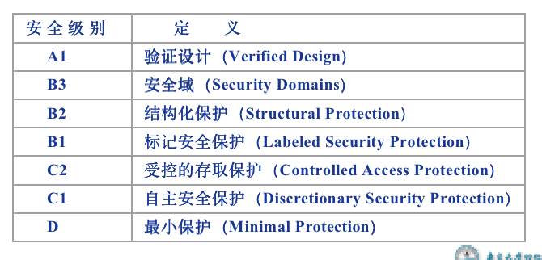
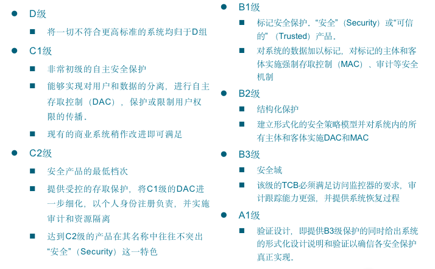
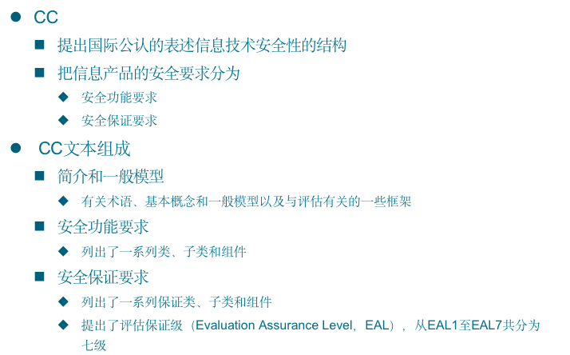
CC评估保证级（EAL）划分
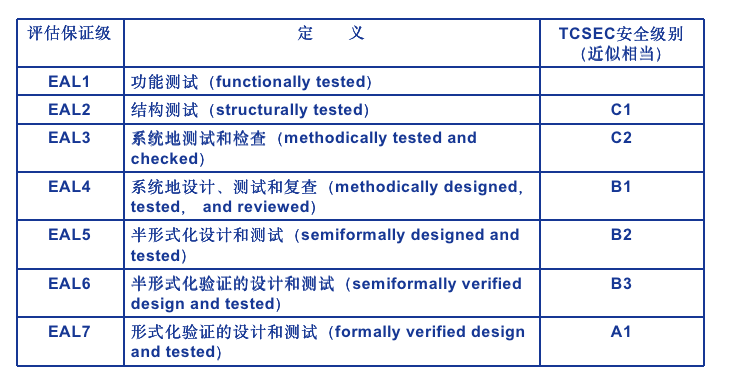
计算机系统的安全模型
-
计算机系统中，安全措施是一级一级层层设置
-
系统根据用户标识鉴定用户身份，合法用户才准许进入计算机系统
-
数据库管理系统还要进行存取控制，只允许用户执行合法操作
-
操作系统有自己的保护措施
-
数据以密码形式存储到数据库中
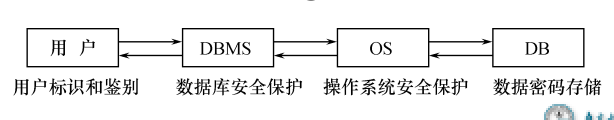
数据库管理系统安全性控制模型
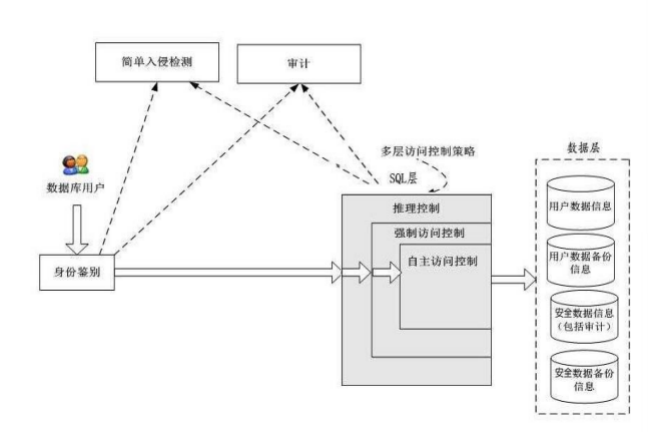
存取控制
-
存取控制机制组成
- 定义用户权限，并将用户权限登记到数据字典中
- 用户对某一数据对象的操作权力称为权限
- DBMS提供适当的语言来定义用户权限，存放在数据字典中，称做安全规则或授权规则
- 合法权限检查
- 用户发出存取数据库操作请求
- DBMS查找数据字典，进行合法权限检查
- 定义用户权限，并将用户权限登记到数据字典中
-
用户权限定义和合法权检查机制一起组成了数据库管理系统的存取控制子系统
自主存取控制
自主存取控制（Discretionary Access Control ，简称DAC）
-
C2级
-
用户对不同的数据对象有不同的存取权限
-
不同的用户对同一对象也有不同的权限
-
用户还可将其拥有的存取权限转授给其他用户
-
通过 SQL 的GRANT 语句和REVOKE 语句实现
-
用户权限组成
- 数据库对象
- 操作类型
-
定义存取权限称为授权
- 定义用户存取权限：定义用户可以在哪些数据库对象上进行哪些类型的操作
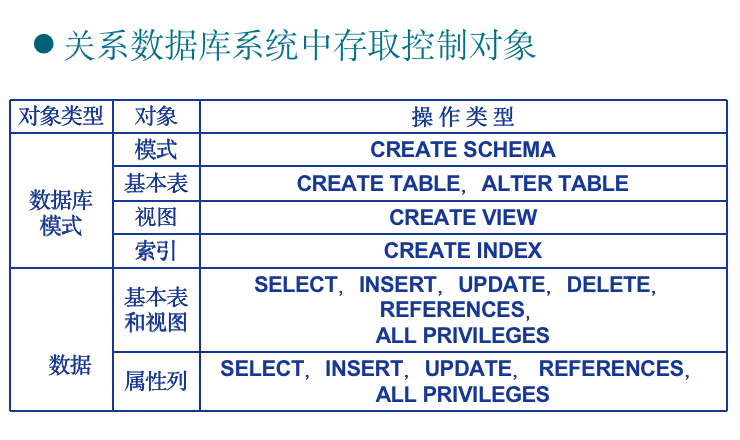
SQL中的授权机制
-
数据库管理员：
- 拥有所有对象的所有权限
- 根据实际情况不同的权限授予不同的用户
-
用户：
- 拥有自己建立的对象的全部的操作权限
- 可以使用GRANT，把权限授予其他用户
-
被授权的用户
- 如果具有“继续授权”的许可，可以把获得的权限再授予其他用户
-
所有授予出去的权力在必要时又都可用REVOKE语句收回
GRANT
GRANT语句的一般格式：
1 | GRANT <权限>[,<权限>]... |
语义：将对指定操作对象的指定操作权限授予指定的用户
发出GRANT：
-
数据库管理员
-
数据库对象创建者（即属主Owner）
-
拥有该权限的用户
按受权限的用户
-
一个或多个具体用户
-
PUBLIC（即全体用户）
WITH GRANT OPTION子句:
-
指定：可以再授予
-
没有指定：不能传播
-
不允许循环授权
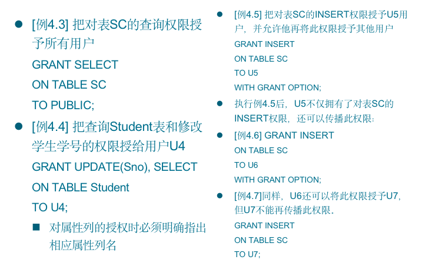
REVOKE
授予的权限可以由数据库管理员或其他授权者用REVOKE语句收回
REVOKE语句的一般格式为：
1 | REVOKE <权限>[,<权限>]... |
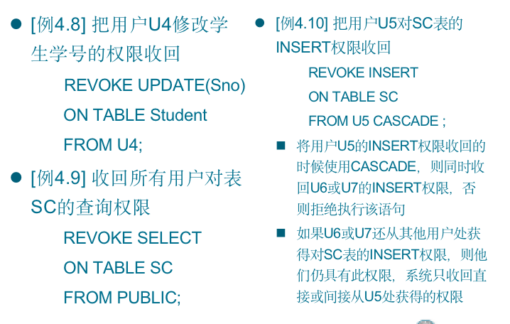
创建数据库模式的权限
-
数据库管理员在创建用户时实现
- CREATE USER语句格式
- CREATE USER
- [WITH] [DBA|RESOURCE|CONNECT];
注： CREATE USER不是SQL标准，各个系统的实现相差甚远
-
只有系统的超级用户才有权创建一个新的数据库用户
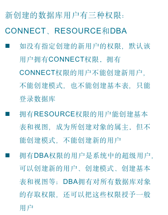
数据库角色
-
数据库角色：被命名的一组与数据库操作相关的权限
- 角色是权限的集合
- 可以为一组具有相同权限的用户创建一个角色
- 简化授权的过程
-
角色的创建
CREATE ROLE <角色名>
-
给角色授权
GRANT <权限>[,<权限>]… ON <对象类型>对象名 TO <角色>[,<角色>]…
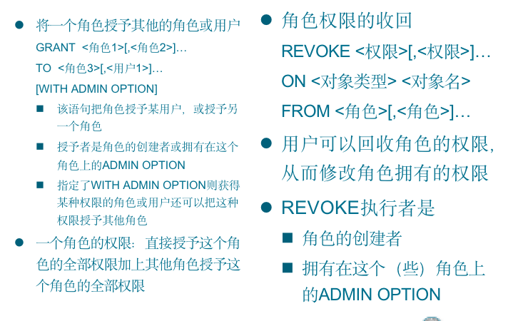
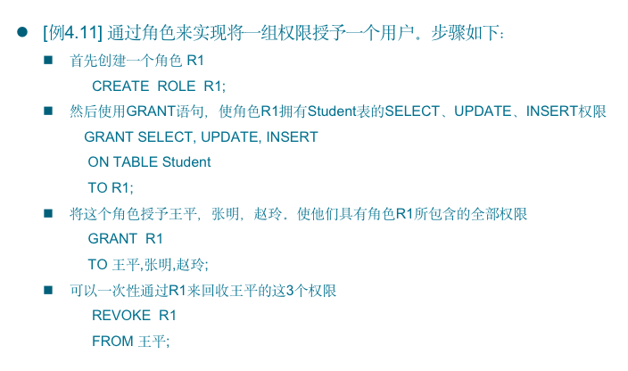
自主存取控制缺点
可能存在数据的“无意泄露”
-
原因：这种机制仅仅通过对数据的存取权限来进行安全控制，而数据本身并无安全性标记
-
解决：对系统控制下的所有主客体实施强制存取控制策略
强制存取控制
强制存取控制（Mandatory Access Control，简称 MAC）
-
B1级，保证更高程度的安全性
-
每一个数据对象被标以一定的密级
-
每一个用户也被授予某一个级别的许可证
-
对于任意一个对象，只有具有合法许可证的用户才可以存取
-
用户不能直接感知或进行控制
-
适用于对数据有严格而固定密级分类的部门
- 军事部门
- 政府部门
实体
在强制存取控制中，数据库管理系统所管理的全部实体被分为主体和客体两大类
-
主体是系统中的活动实体
- 数据库管理系统所管理的实际用户
- 代表用户的各进程
-
客体是系统中的被动实体，受主体操纵
- 文件、基本表、索引、视图
敏感度标记
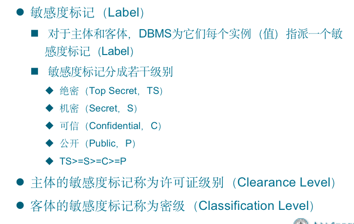
强制存取控制规则
强制存取控制规则
-
仅当主体的许可证级别大于或等于客体的密级时，该主体才能读取相应的客体
-
仅当主体的许可证级别小于或等于客体的密级时，该主体才能写相应的客体
强制存取控制（MAC）是对数据本身进行密级标记，无论数据如何复制，标记与数据是一个不可分的整体，只有符合密级标记要求的用户才可以操纵数据。
DAC + MAC
实现强制存取控制时要首先实现自主存取控制
-
原因：较高安全性级别提供的安全保护要包含较低级别的所有保护
自主存取控制与强制存取控制共同构成数据库管理系统的安全机制，先进行自主存取控制检查，通过自主存取控制检查的数据对象再由系统进行强制存取控制检查，只有通过强制存取控制检查的数据对象方可存取。
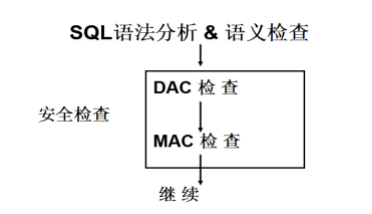
视图机制、审计、数据加密及其他
视图机制
-
把要保密的数据对无权存取这些数据的用户隐藏起来，对数据提供一定程度的安全保护
-
间接地实现支持存取谓词的用户权限定义
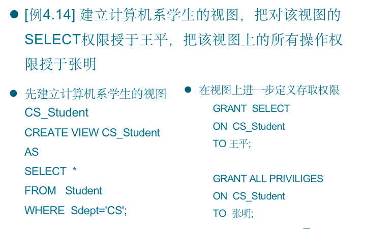
审计
-
启用一个专用的审计日志（Audit Log）将用户对数据库的所有操作记录在上面
-
审计员利用审计日志监控数据库中的各种行为，找出非法存取数据的人、时间和内容
-
C2以上安全级别的DBMS必须具有审计功能
审计功能的可选性
-
审计很费时间和空间
-
DBA可以根据应用对安全性的要求，灵活地打开或关闭审计功能
-
审计功能主要用于安全性要求较高的部门
审计事件
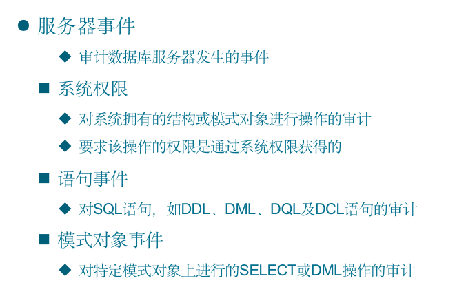
审计功能
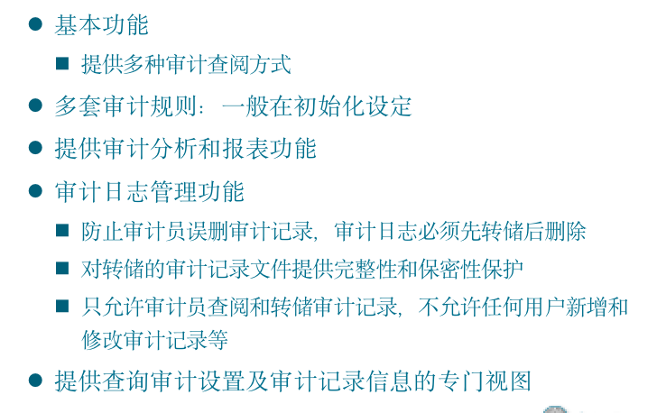
审计级别
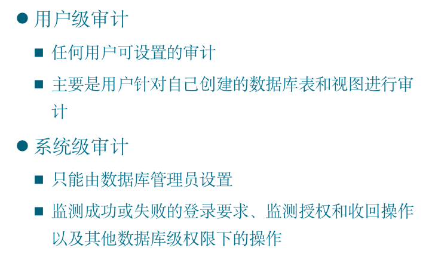
审计语句
AUDIT语句和NOAUDIT语句
-
AUDIT语句：设置审计功能
-
NOAUDIT语句：取消审计功能
数据加密
防止数据库中数据在存储和传输中失密的有效手段
-
加密的基本思想
根据一定的算法将原始数据—明文（Plain text）变换为不可直接识别的格式—密文（Cipher text）
-
加密方法
-
存储加密
-
传输加密
存储加密
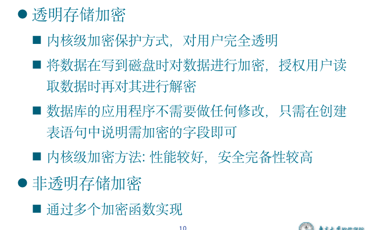
传输加密
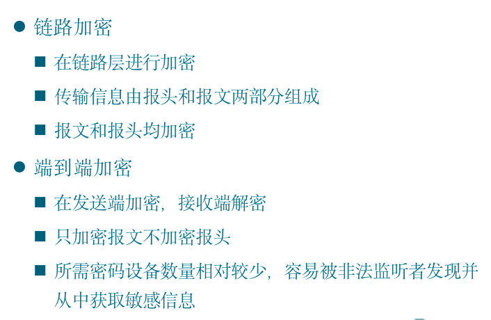
其他安全性保护
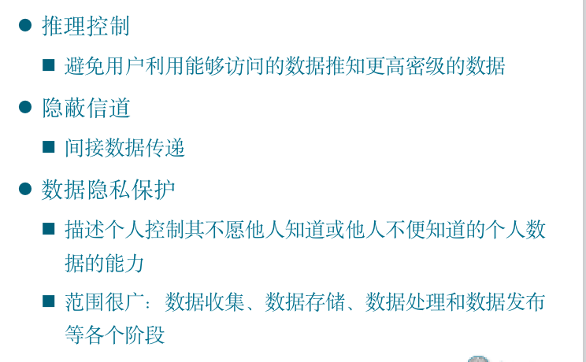